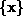
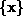
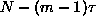
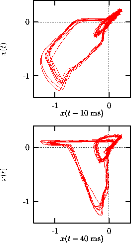

The most important phase space reconstruction technique is the method of
delays. Vectors in a new space, the embedding space, are formed from time
delayed values of the scalar measurements:
The number m of elements is called the embedding dimension, the time
 is generally referred to as the delay or lag. Celebrated
embedding theorems by Takens [21] and by Sauer et al. [22]
state that if the sequence
is generally referred to as the delay or lag. Celebrated
embedding theorems by Takens [21] and by Sauer et al. [22]
state that if the sequence  does indeed consist of scalar measurements
of the state of a dynamical system, then under certain genericity assumptions,
the time delay embedding provides a one-to-one image of the original set
, provided m is large enough.
does indeed consist of scalar measurements
of the state of a dynamical system, then under certain genericity assumptions,
the time delay embedding provides a one-to-one image of the original set
, provided m is large enough.
Time delay embeddings are used in almost all methods described in this
paper. The implementation is straightforward and does not require further
explanation. If N scalar measurements are available, the number of embedding
vectors is only . This has to be kept in mind for the correct
normalization of averaged quantities. There is a large literature on the
``optimal'' choice of the embedding parameters m and  . It turns out,
however, that what constitutes the optimal choice largely depends on the
application. We will therefore discuss the choice of embedding parameters
occasionally together with other algorithms below.
. It turns out,
however, that what constitutes the optimal choice largely depends on the
application. We will therefore discuss the choice of embedding parameters
occasionally together with other algorithms below.

Figure: Time delay representation of a human magneto-cardiogram. In the upper panel, a short delay time of 10 ms is used to resolve the fast waveform corresponding to the contraction of the ventricle. In the lower panel, the slower recovery phase of the ventricle (small loop) is better resolved due to the use of a slightly longer delay of 40 ms. Such a plot can be conveniently be produced by a graphic tool such as gnuplot without generating extra data files.
A stand-alone version of the delay procedure (delay) is an
important tool for the visual inspection of data, even though visualization is
restricted to two dimensions, or at most two-dimensional projections of
three-dimensional renderings. A good unfolding already in two dimensions may
give some guidance about a good choice of the delay time for higher
dimensional embeddings. As an example let us show two different
two-dimensional delay coordinate representations of a human magneto-cardiogram
(Fig.  ). Note that we do neither assume nor claim that the
magneto- (or electro-) cardiogram is deterministic or even chaotic. Although
in the particular case of cardiac recordings the use of time delay embeddings
can be motivated theoretically [23], we here only want to use the
embedding technique as a visualization tool.
). Note that we do neither assume nor claim that the
magneto- (or electro-) cardiogram is deterministic or even chaotic. Although
in the particular case of cardiac recordings the use of time delay embeddings
can be motivated theoretically [23], we here only want to use the
embedding technique as a visualization tool.